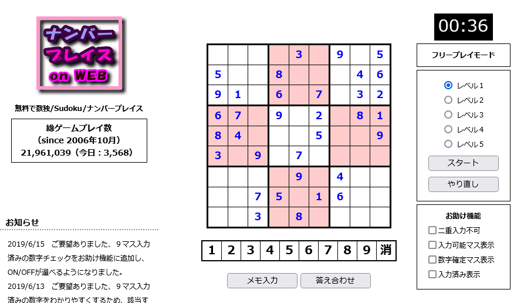
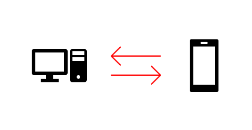

専修を嫌いになってはいけない
これから「プログラミング」について多く学んでいく事になると思いますが、そもそも勉強する事自体に抵抗があったりしませんか？
ここでは少し「勉強」する事について考えてみたいと思います。
日本では少年少女の年代から学校という教育機関に就業させ、学問や教養をリーダー(いわゆる先生・指導者)から教わる仕組みがあります。(いわゆる学生です)
子どもの頃は何のために学業に勤しみ、知識を覚えさせられるのか分からないものです。
しかしこの時点でそう思っている(思っていた)人は間違っています。教育は知識を蓄えるためにあるものではありません。
みなさんは「勉学」「5教科」「グループワーク」についてその本当の意味を知っているでしょうか？
英・国・数・理・社の教科で見てみましょう。
算数(数学)を学ぶ理由について
算数と言えば四則演算や分数、数学は図形の範囲を求めたり、公式に数字を当てはめて答えを導き出すルールの決められた数字ロジックのようなイメージが強いかもしれません。
ですが実際にはそんな「1＋1」や「3分の2」、「XY軸のグラフ」なんてものはどうでもいいのです。
どうでもいいと言えばウソになりますが、視点を間違っていませんか？という話です。
問題は文章問題の答えの数ではなく、あなたが頭の中で論理的思考能力を発揮しているかどうかという問題です。
論理的思考能力というのは、AとBが組み合わさってCが出来上がるといったこうなったらああなるはず、というプロセスから答えを導き出す思考の事です。
プログラミングにおいては、何かを作ろうとした時にこの命令とこの命令を使えばこういったシステムが出来上がるはず、だからこのようにして組立ていこう、という考えが出てくる事に繋がってきます。
ゴールに辿り着くにはその道中がなければいけません。算数や数学はその道中(アルゴリズム)を探し求める教養を得る事ができる大変優れた学問です。
国語を学ぶ理由について
日本の国語の授業では、漢字の書き取りや文法の用語の説明などに無駄に時間を割きすぎではないでしょうか。漢字の書き順なんてものはルールの押し付けでしかありません。
私個人の意見として述べるようで申し訳ないが、国語はもっと会話を通した集団ディスカッションを行うべきだと考えます。
高校受験や大学受験の国語の問題でも文章問題を中心とした文章から意図を読み取って答える問題が出てきます。これらが悪いとは言いません。
しかし本当に大切なのは、個人の意見の尊重のはずです。100人の中のたった2人だけが述べた孤立した意見でも耳を傾けて物事を客観的に見る思想が日本には決定的に欠如していると思います。
なんでもかんでも多数決で物事を解決する文化？があるようで、それは結論であり根本的な解決ではありません。
話がかなり脱線してしまいましたが、国語では会話内容や議題、文章、テキストからその思惑を紐解く読解力を培う事ができます。
ITの世界のみならず、この知識はどの業界でも必要かとは思います。
逆に自分が伝えたい物事を文章にする力も身に付ける必要はあると思います。国語の本来あるべき姿はそこにあると思います。
社会を学ぶ理由について
歴史や世界史は現在の世界がどのように構築されたかを知るためのものですが、システムの世界にも歴史があり、今のIT先進技術があります。
その本当の意味を知るには、物事の経緯や成り立ちを知る事はとても重要な事です。
現代の政治や法律という仕組みはどのようにして生まれてきたのか、それがどのように生活に影響を及ぼしているのかを考える事でそれが存在する理由を考える力が培われます。
社会は、物事の生い立ちから世界がどのような意味合いを持っているのかその本質を見抜く教養を得る事ができます。
勿論これもITにおいて考えるとこの業界に存在するネットワークシステムやインフラが世界を支える世の中ですし、倫理の考え方は情報リテラシーやセキュリティの知識にも繋がってきます。
理科を学ぶ理由について
自然界に存在するものは全て生命です。
その生命の奇跡は素晴らしいもので、一つ一つに存在意義があり、生命体としてのテクノロジーが備わっています。
なぜそれらが存在しているのか？生物も物理も天文学も全て理由を追求するものです。
山や川はどうやってできるのか、なぜそれがそこにあるのか、その探求心こそがシステム開発にとっても必ず役に立ってきます。
理科では分析する力、探求する力の精彩を得る事ができるのです。
英語を学ぶ理由について
英語は世界で通用する唯一の共通言語です。
プログラミングの世界でも多くのウェブサイトで英語によってコミュニケーションが図られており、そういった意味でも英語は覚えておいて損は絶対にありません。
私は英語苦手で、英文法はひたすらぶつぶつ日々呟いて身体に染み込ませていくしかありませんが、英語での会話ができれば世界は驚くほど広がるでしょう。
英語のコミュニケーションでは、まだ知らない世界の文化や特色を知る事が出来るだけでなく、幅広い情報源を得る事にもなります。
・・・どうですか？これだけでも5教科の重要性は十分に分かると思います。
でもこんな事を小学生低学年の頃から気が付くはずもありません。これらの重要性は社会という秩序の中で単独で生きていく体験をしないと見つからないからです。
苦労話は絶対に会話ではうまく伝わりません。
では、大人になってから今から5教科やるの？という事ではありません。プログラミングの世界に足を踏み入れる前に心の準備をしましょう、という事です。
それは世界観を知る事でもありますし、何より問題の解決力を養う意味でも重要な事です。
パズルゲームをやろう
まずはパソコンとできるだけ仲良くなる事が大事です。
事務の仕事をしている方や情報系専門学校に通った事のある方はもう既にパソコンについて色々知っていると思いますので、その必要はないかもしれません。
私の場合、昔からクロスワードパズルの雑誌をよく買ってやっていました。
少しでもロジカルな思考を身に付ける。それがこのウェブサイトの読者さん皆さんの最初の課題です。
例えば以下のようなゲームをやってもらうのが効果的です。
|  |
数独。ナンバープレイスで論理的思考能力を鍛える |
ナンバープレイスonWEB 数独(Sudoku)を無料で何度も楽しめる（別ウインドウで開きます）
基本的には、頭で考えて自分が納得のいく結論を導き出すような脳トレをすればいいのです。
プログラミングでは目に見えない課題を考えて、合理性のあるものを作り出し、自分が思い描いたシステムを手がけていくクリエイティブワークです。
そういったものに立ち向かっていくにはまず「恐れない事」、「面白さを見出す事」、「論理的に理解する力」を身に付けましょう。
ロジカルシンキングゲームの定番、倉庫番。 |
ここでこれらを紹介したのは、ゲームならまだなんとなく親しみやすいと考えたからです。
とにかく何でもいいので自分の脳を活性化させる。これがプログラミングを始め、勉強を開始する始めの第一歩になります。
「難しいもの」と思わない事
日本では文部科学省推進のもと、2020年から小学校などで「プログラミング」が必修科目になりました。
現代の子どもたちもプログラムを通して論理的に問題を解決する能力を鍛える事を始めています。
「プログラミング」と言えば一昔前は一部のエリート階層の専門家がパソコンを使ってシステムを作る専門知識の職種というイメージを持たれている方もいるかもしれません。
そもそもパソコン自体が専門家が使う機械である、というイメージも未だ根強くあると思います。
2000年代辺りから急速にウェブが世界に浸透し、オンラインショッピングサービスの台頭やスマートフォンの登場、ソーシャルネットワークサービス(SNS)の開始などで一気にコンピュータが一般的なものとして普及しました。
もはやパソコンは専門家だけが使う特別なツールではなくなっています。
「スマートフォン」と「パソコン」はほぼ一緒です。厳密には違うのですが、仕組みとしてはモバイルできるパソコンと言ってもいいでしょう。
|  |
パソコンに打って変わるツールとして注目されるスマートフォン |
また我々は既に多くのコンピュータを使って生活しているのはご存じでしょう。ようはそんな意識を持っていないだけで、実際には使っているのです。
「パソコン」も勿論「コンピュータ」ですし、テレビや冷蔵庫、車、スマートフォンも全部「コンピュータ」です。
もはや我々はコンピュータの力なしに生きていく事は出来ません。それだけコンピュータは身近な存在なのです。
「え、でもコンピュータを使うのと作るのは全く違う。そんな簡単に言われても…」とお思いかもしれませんね。
実際にはプログラミングに関しても仕組みを理解するかどうかというその差です。
結局はコンピュータを使うにしても何にしても「こうするとこうなる」という理屈の元、我々は日々生きているのです。花は暖かくなると咲き、暑くなると葉を付け、気温が下がると枯れる、そんな理屈で世の中は成り立っています。
その理屈を今の小学生たちが学校の授業で習っているのです。
勿論、器用・不器用という差や好き嫌いで習得に掛かる時間には影響は出るかもしれません。しかし目指すゴールは同じ場所です。
目標を明確にする事で、人はその目的を達成する事ができるのです。
そして何より重要なのは、嫌々学習しないでほしいという事です。
プログラミングの学習において最も阻害要因となるのは、心理的なマイナス思考です。「あ、私ってIT人に向いてないんだな…」と思う事が最もいけない事です。
まずはプログラミングに対して抵抗がない状態を維持する事、これが大前提です。
なにやらここまでに色々言ってしまいましたが、プログラミングを始める前に必要な要素をまとめておきます。
- 専修(勉学)にメリットを感じるようになること
- パソコンを難しい機械だと思わずに理解すれば使えるものだと自覚すること
- 分からない事、初めて知る事、難しい事に対して「なぜそうなるのか」を疑問に持ち分析する心意気を持つこと
- ロジカルシンキング(論理的思考能力)を行うようにすること
- マイナス思考を捨てること
これらが私がまず最初に伝えたい、プログラミングを始めるにあたって必要となる考え方です。
人間である以上失敗はします。人生はひたすら自分といかに真正面から向き合えるかが勝負です。
自分自身を高めていくにはある時には固定概念を捨てないといけない事や、何かを犠牲にする事も出てくる事もあるかもしれません。
プログラミングを始める際にそれらの障害をうまく乗り越えていけるかどうかは、私がここで教える事ではなく皆さん次第です。(こればかりは)
勉強する時間も含めてまとまった時間を確保する事も大切です。
最初は脳を柔らかくして、学習環境を整えてみましょう( ^ω^)
コラム：メリハリを付けて他人と比較しない |
|||
|
世の中色んな人、色んな動物、色んな食べ物、色んな遊びなどがあります。それらを見てなんとなく気が付く事はないでしょうか？
私はあの頃学校に行きたくてもいけない事情があったのですが、今考えて学校に通えなかった事に対して悔みはありません。
ようは他人と比べて自分は劣っているからどうだこうだという比較は何の意味もないという事です。
プログラミングの学習に関しては、誰かに教えてもらうものではないと思います。
|